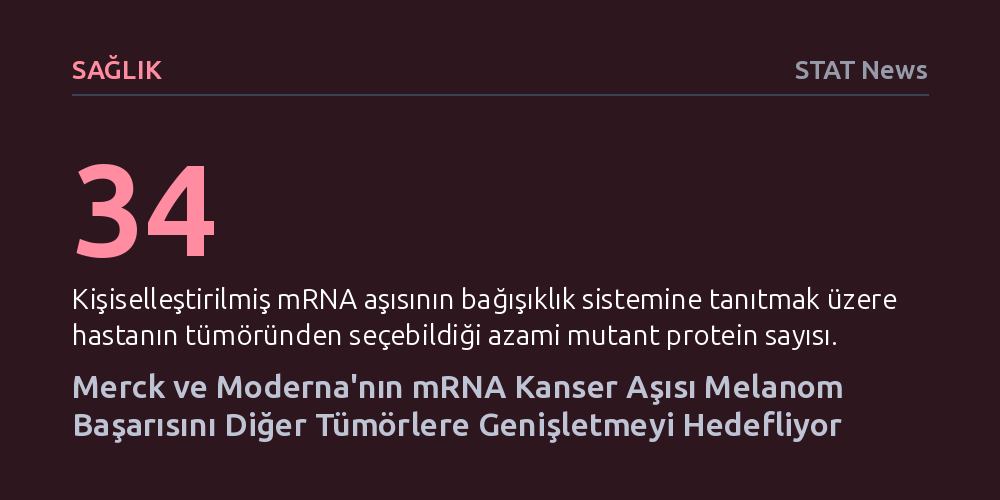

SAGLIK · STAT News · 2026-10-16
Merck ve Moderna'nın kişiselleştirilmiş mRNA kanser aşısı, Faz 3 denemesinde melanom nüksünü ve metastazı belirgin biçimde geciktirerek ruhsat başvuru aşamasına ulaştı. İki şirket, elde edilen bu başarıyı Keytruda kombinasyonuyla akciğer, böbrek ve pankreas gibi diğer tümör türlerine taşımayı hedefliyor.
Kanser aşılarının yıllardır süren vaat aşamasını aşıp, ameliyat sonrası nüksü önlemede ve bağışıklık sistemini kişiye özel mutasyonlara karşı eğitmede somut bir tedaviye dönüştüğünü kanıtlıyor.

Cilt kanserinin en ölümcül türü olan melanomda cerrahi müdahale genellikle ilk adım olsa da hastalar için tehlike ameliyathanede sona ermiyor. Görünür tümör temizlense bile kanser hücrelerinin geride kalarak aylar ya da yıllar sonra çok daha agresif biçimde nüksetmesi sık karşılaşılan bir tablo. 2019 yılında melanom teşhisi alan öğretmen Gary Keblish gibi hastalar için bu belirsizlik, Merck ve Moderna’nın ortaklaşa geliştirdiği kişiselleştirilmiş mRNA kanser aşısı denemesiyle yeni bir umuda dönüştü.
Ağustos ayında açıklanan geniş kapsamlı Faz 3 klinik çalışma sonuçları, aşının hem kanserin tekrarlamasını hem de diğer organlara yayılmasını (metastazı) belirgin ölçüde geciktirdiğini ortaya koydu. Yıllardır büyük vaatlerle gündeme gelen ancak klinik ortamda istenen etkiyi gösteremeyen kanser aşısı alanı için bu bulgular tarihi bir kırılma noktası niteliğinde. Keblish’in bugün halen öğretmenlik yapabiliyor olması, iki şirketin aşıyı resmi ruhsat onayı için yetkili kurumlara sunma hazırlığına girişmesini sağladı.
Kimyasal adı 'intismeran autogene' olan aşı, geleneksel koruyucu aşılardan tamamen farklı bir prensiple işliyor. Tedavi sürecinde her hastanın kendi tümör dokusundan alınan genetik materyal özel bir yazılım algoritmasıyla taranıyor. Algoritma, hastanın bağışıklık sistemini en güçlü şekilde tetikleyecek 34 adede kadar özgün mutant proteini belirliyor. Seçilen bu mutasyonlar bir mRNA zincirine kodlanarak vücuda veriliyor ve böylece bağışıklık hücrelerine adeta hücresel bir 'aranıyor ilanı' dağıtılmış oluyor.
Aşının başarısındaki kilit etkenlerden biri de Merck’in yaklaşık 15 yıldır binlerce denemede test edilen bağışıklık ilacı Keytruda ile birlikte kullanılması. Kanser hücreleri bağışıklık sisteminin fren mekanizmalarını kullanarak kendilerini T hücrelerinden gizleyebiliyor. Keytruda bu frenleri serbest bırakırken, kişiye özel mRNA aşısı da serbest kalan bağışıklık ordusuna doğrudan nereye saldıracağını gösteriyor. İki mekanizmanın bu ortaklığı, özellikle mutasyon yükü yüksek ve bağışıklık hücrelerinin sızabildiği 'sıcak tümörlerde' yüksek etkinlik sağlıyor.
Elde edilen başarı önemli bir kazanım olsa da geliştirici şirketler bu teknolojiyi yalnızca belirli melanom hastalarıyla sınırlı tutmak istemiyor. Moderna Başkanı Stephen Hoge, STAT Zirvesi’nde yaptığı değerlendirmede henüz keşfetmeleri gereken geniş bir alan olduğunu vurguluyor. Şirketler, tıpkı ilk nesil immünoterapilerin onkolojiyi dönüştürdüğü gibi, bu aşı kombinasyonunu da çok sayıda farklı tümör türünde standart tedaviye dönüştürmeyi amaçlıyor.
Bu doğrultuda halihazırda ameliyat sonrası dönemde akciğer, böbrek ve mesane kanserleri üzerinde klinik denemeler yürütülüyor. Araştırma ekipleri ayrıca pankreas ve mide kanseri gibi daha zorlu tümörlerde erken aşama testleri sürdürüyor. Bir diğer vizyoner hedef ise tedaviyi çok daha erken evrelere çekmek. Tümör henüz 3. veya 4. evreye ulaşmadan, hastalığın ilk aşamalarında bağışıklık müdahalesi yaparak kanseri ilerlemeden önlemek en büyük fırsat alanlarından biri olarak görülüyor.
Kişiselleştirilmiş aşı yaklaşımı devrimsel bir potansiyel barındırsa da kusursuz değil. Hastanın tümöründen mutant proteinleri seçen algoritmanın henüz mükemmel düzeyde olmadığı kabul ediliyor. Ancak klinik çalışmalara katılan hastaların bağışıklık tepkileri detaylı biçimde incelendikçe, toplanan verilerin yazılımı zamanla çok daha isabetli hale getirmesi bekleniyor.
Bunun yanında sektördeki rekabet belirgin bir strateji farkını ortaya çıkarıyor. Merck ve Moderna, Keytruda’nın 15 yıllık tecrübesine dayanarak ilacın halihazırda başarılı olduğu 'sıcak' tümörlere ve ameliyat sonrası adjuvan tedaviye öncelik veriyor. Bu temkinli yaklaşım, bağışıklık sisteminin zorlandığı 'soğuk' veya ileri metastatik tümörleri doğrudan hedef alıp erken denemelerde umut verici sonuçların yanında ciddi başarısızlıklar da yaşayan BioNTech gibi rakiplerin stratejisinden ayrışıyor. Merck, başarısı kanıtlanmış alanlardan güç alarak adım adım ilerlemeyi tercih ediyor.